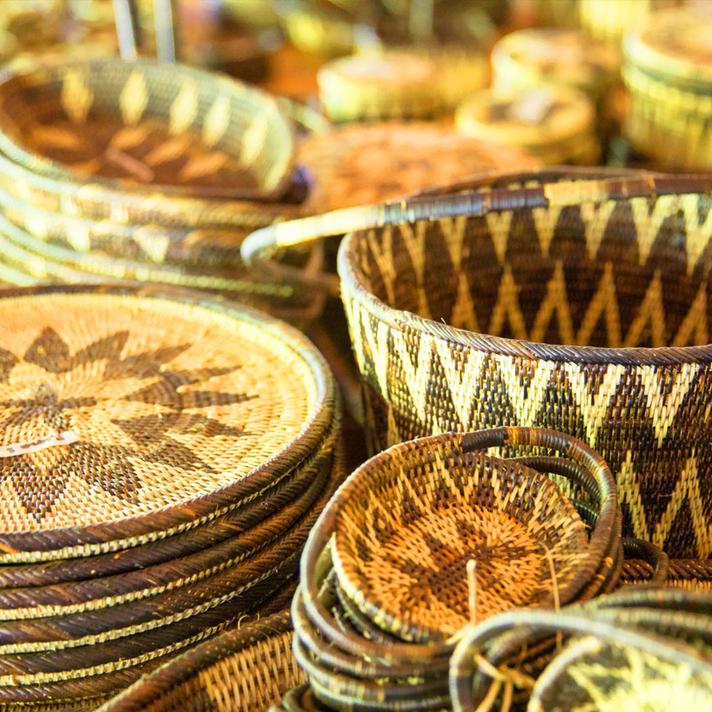

At Katutubo, you'll find unique and high-quality indigenous products that are crafted and designed by native Filipinos from different parts of the Philippines.




Welcome!
At Katutubo, you'll find unique and high-quality indigenous products that are crafted and designed by native Filipinos from different parts of the Philippines.
Contact Us: shop@katutubo.com | (02) 7 896 4412
This Website is made for educational purposes only.